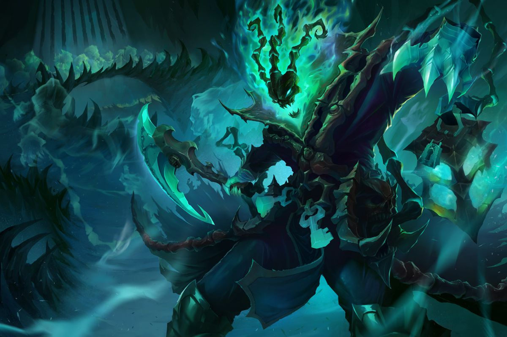

About Thresh
Thresh is the Warden of Souls. He collects the souls from the enemies he kills and uses them to empower his abilities and strength.
Default Thresh skin
Thresh Facts
- His main weapon is his hook
- He stores his souls within his lantern
- Until recently, he carried the soul of the wife of a powerful gunslinger named Lucian
Quick facts
Thresh is from the universe of League of Legends which is set in the fantasy world of Runterra. He dwells within the gloomy realm of the Shadow Isles, and fights with other champions on the legendary battlegrounds known as Summoners Rift! Click on link below to learn more about the Universe of League of Legends!: